Severance (Season 2)
Adam Scott, Patricia Arquette, John Turturro
Actor · Juilliard MFA
French · Italian · American — moving between screen and stage on both sides of the Atlantic.
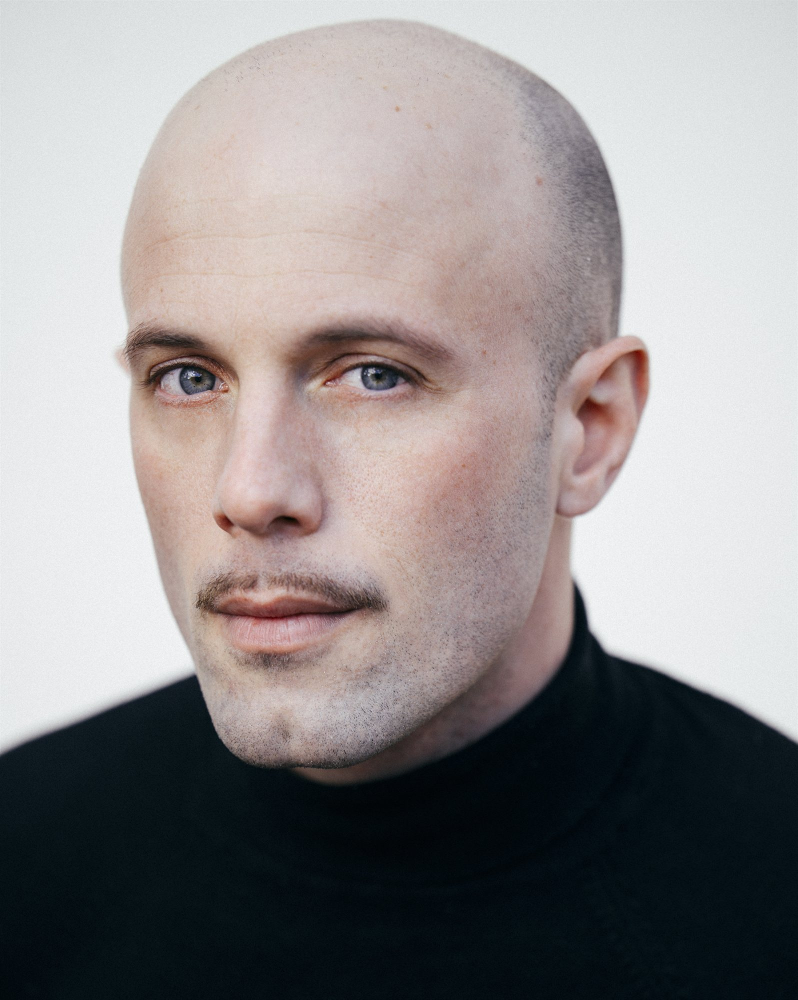
01 — Work
Download résumé
Featured
Writer & Lead
A short film written by and starring Luca Fontaine, directed by Mathery.
Watch on YouTube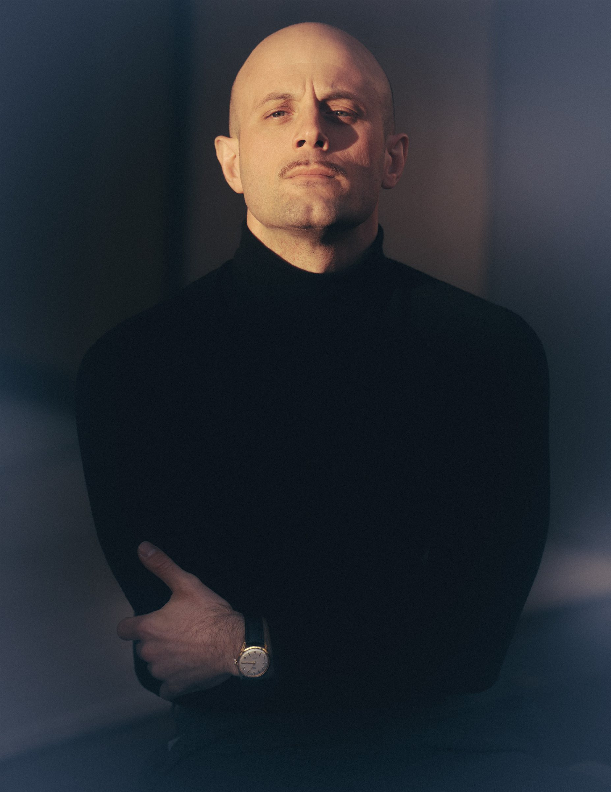
“A native of three languages — at home in the silence between them.”
02 — Also
Accent precision and cross-cultural performance for award-winning actors across Broadway, film and television.
Adam Scott, Patricia Arquette, John Turturro
Mahershala Ali, Glenn Close, Naomie Harris, Awkwafina
Andrew Burnap, Phillipa Soo
Hiran Abeysekera (Olivier Award winner)
Rose Byrne, Kelli O'Hara, Mark Consuelos
Logan Lerman, Joey King
Jon Hamm, Marcia Gay Harden
Tom Hiddleston, Charlie Cox
Adam Driver, Keri Russell
Coaching résumé
03 — Gallery
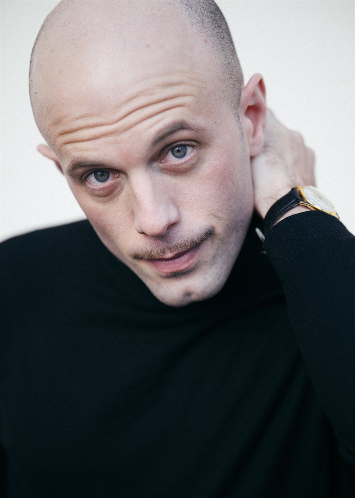
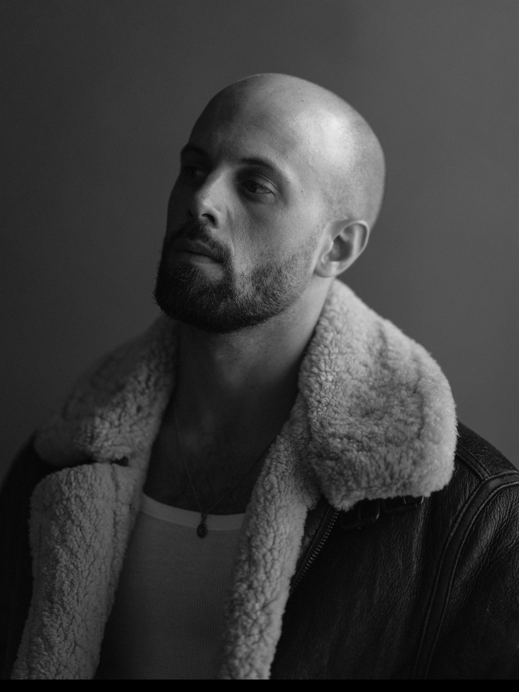
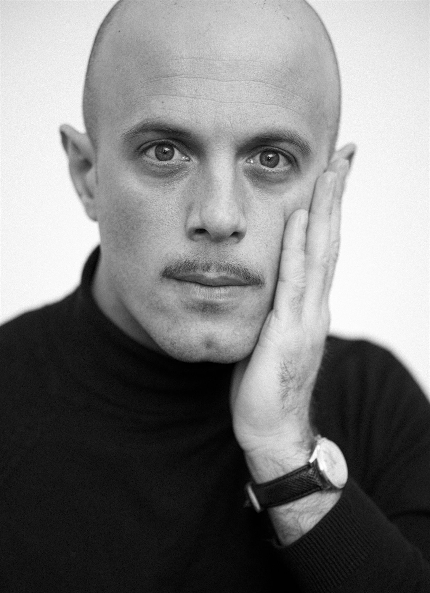
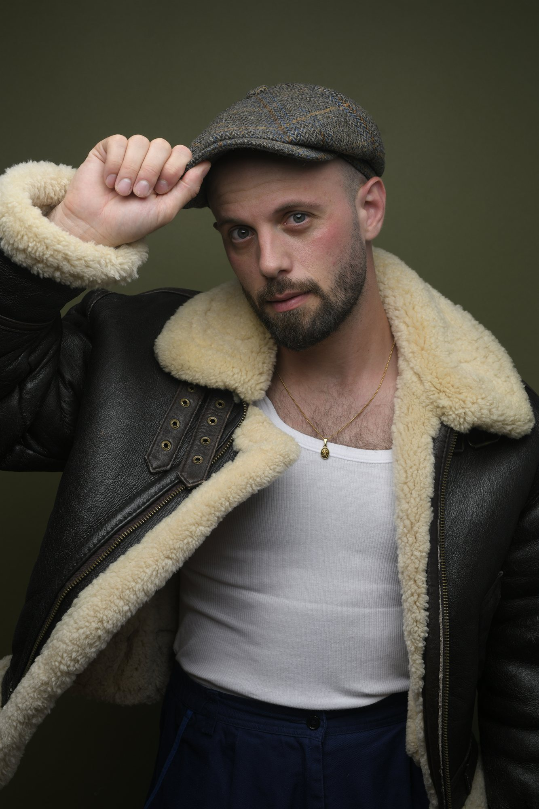
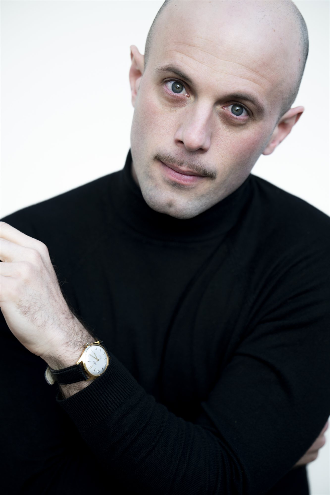
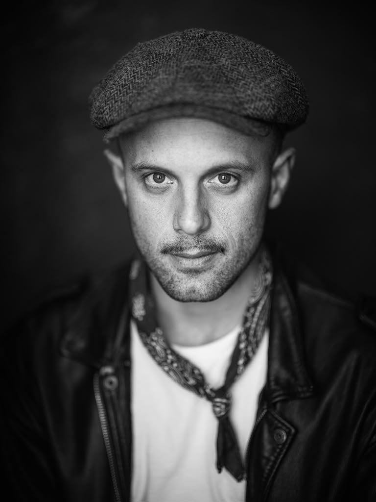
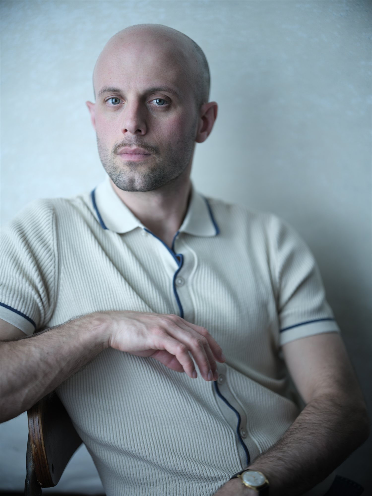
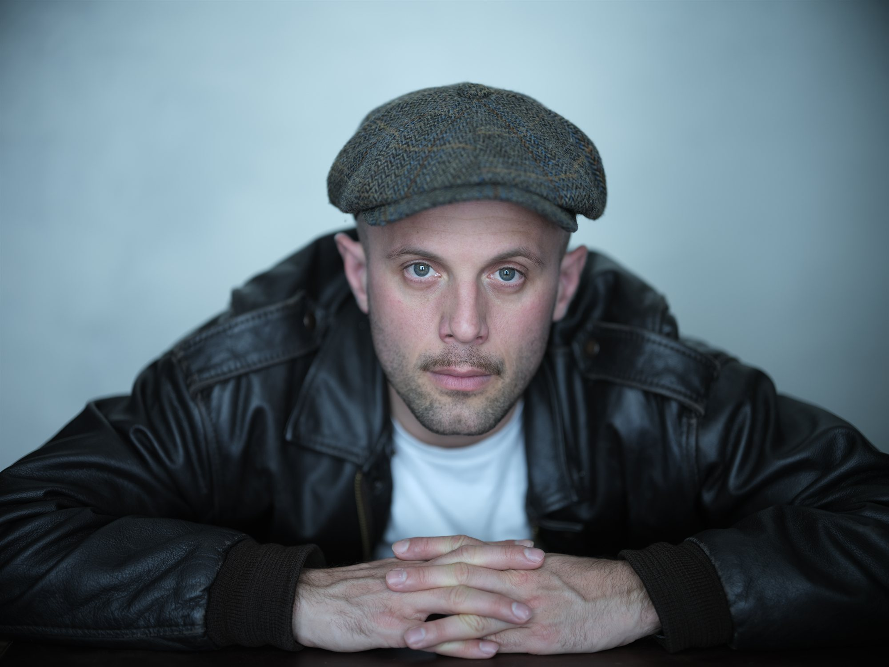
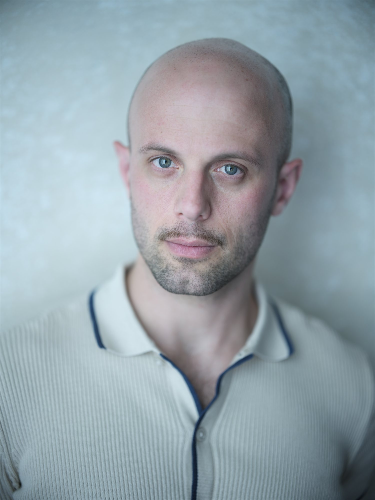
04 — About
Luca Fontaine is a French–Italian–American actor trained at The Juilliard School (MFA, Group 51), the National Conservatoire of Dramatic Arts in Versailles and the Cours Simon in Paris. A native speaker of French, Italian and English — and fluent in Spanish and Portuguese — he moves fluidly between screen and stage on both sides of the Atlantic.
Recent screen work includes Nathan Fielder's The Rehearsal (HBO), Zorro (Paramount+), Robert King's EVIL (CBS) and Oriol Paulo's La Última Noche en Tremore (Netflix), alongside films directed by Andrew Niccol and Luis Prieto. On stage he has toured internationally in Martha Clarke's God's Fool and performed with Exchange Theatre London and the National Youth Theatre of Great Britain.
His honours include Juilliard's John Houseman Prize, the Career Advancement Fellowship and the Michael & Suria Saint-Denis Prize. Beyond performance, Luca is a sought-after dialect coach to award-winning actors across Broadway, film and television.
05 — Contact